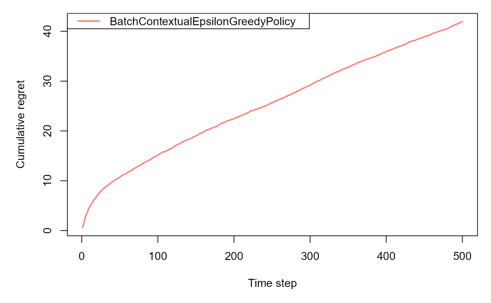

This function runs on-policy simulation for contextual bandit algorithms using the Cram method. It evaluates the statistical properties of policy value estimates.
Usage
cram_bandit_sim(
horizon,
simulations,
bandit,
policy,
alpha = 0.05,
do_parallel = FALSE,
seed = 42
)Arguments
- horizon
An integer specifying the number of timesteps (rounds) per simulation.
- simulations
An integer specifying the number of independent Monte Carlo simulations to perform.
- bandit
A contextual bandit environment object that generates contexts (feature vectors) and observed rewards for each arm chosen.
- policy
A policy object that takes in a context and selects an arm (action) at each timestep.
- alpha
Significance level for confidence intervals for calculating the empirical coverage. Default is 0.05 (95% confidence).
- do_parallel
Whether to parallelize the simulations. Default to FALSE. We recommend keeping to FALSE unless necessary, please see vignette.
- seed
An optional integer to set the random seed for reproducibility. If NULL, no seed is set.
Value
A list containing:
- estimates
A table containing the detailed history of estimates and errors for each simulation.
- raw_results
A data frame summarizing key metrics: Empirical Bias on Policy Value, Average relative error on Policy Value, RMSE using relative errors on Policy Value, Empirical Coverage of Confidence Intervals.
- interactive_table
An interactive table summarizing the same key metrics in a user-friendly interface.
Examples
# \donttest{
# Number of time steps
horizon <- 500L
# Number of simulations
simulations <- 100L
# Number of arms
k = 4
# Number of context features
d= 3
# Reward beta parameters of linear model (the outcome generation models,
# one for each arm, are linear with arm-specific parameters betas)
list_betas <- cramR::get_betas(simulations, d, k)
# Define the contextual linear bandit, where sigma is the scale
# of the noise in the outcome linear model
bandit <- cramR::ContextualLinearBandit$new(k = k,
d = d,
list_betas = list_betas,
sigma = 0.3)
# Define the policy object (choose between Contextual Epsilon Greedy,
# UCB Disjoint and Thompson Sampling)
policy <- cramR::BatchContextualEpsilonGreedyPolicy$new(epsilon=0.1,
batch_size=5)
# policy <- cramR::BatchLinUCBDisjointPolicyEpsilon$new(alpha=1.0,epsilon=0.1,batch_size=1)
# policy <- cramR::BatchContextualLinTSPolicy$new(v = 0.1, batch_size=1)
sim <- cram_bandit_sim(horizon, simulations,
bandit, policy,
alpha=0.05, do_parallel = FALSE)
#> Simulation horizon: 500
#> Number of simulations: 101
#> Number of batches: 1
#> Starting main loop.
#> Finished main loop.
#> Completed simulation in 0:00:04.466
#> Computing statistics.

sim$summary_table
#> Metric Value
#> 1 Empirical Bias on Policy Value 0.01049
#> 2 Average relative error on Policy Value 0.03564
#> 3 RMSE using relative errors on Policy Value 0.31144
#> 4 Empirical Coverage of Confidence Intervals 0.97000
# }